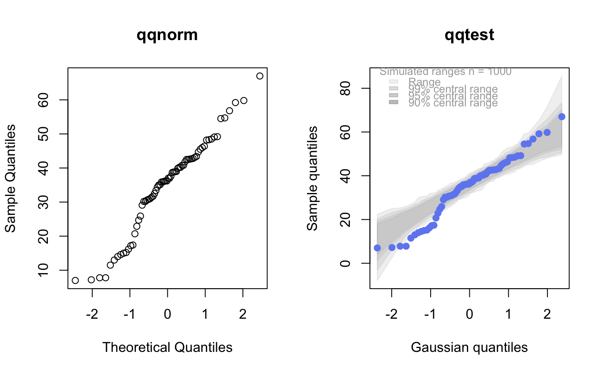

qqtest A self-calibrated quantile-quantile plot for assessing distributional shape.
qqtest.RdDraws a quantile-quantile plot for visually assessing whether the data come from a test distribution that has been defined in one of many ways.
The vertical axis plots the data quantiles, the horizontal those of a test distribution.
Interval estimates and exemplars provide different comparative information to assess the evidence provided by the qqplot against the hypothesis that the data come from the test distribution (default is normal or gaussian). Interval estimates provide test information related to individual quantiles, exemplars provide test information related to the shape of the quantile quantile curve.
Optionally, a visual test of significance (a lineup plot) can be displayed to provide a coarse level of significance for testing the null hypothesis that the data come from the test distribution.
The default behaviour generates 1000 samples from the test distribution and overlays the plot with pointwise interval estimates for the ordered quantiles from the test distribution.
Various option choices are available to effect different visualizations of the uncertainty surrounding the quantile quantile plot. These include overlaying independently generated exemplar test distribution sample quantile traces so as to assess the joint (as opposed to pointwise) distribution of quantiles.
See argument descriptions and examples for more details.
qqtest( data, dist = c("gaussian", "normal", "log-normal", "half-normal", "uniform", "exponential", "chi-squared", "kay", "student", "t"), df = 1, qfunction = NULL, rfunction = NULL, dataTest = NULL, p = NULL, a = NULL, np = NULL, matchMethod = c("hinges", "quartiles", "highbreakdown"), xAxisAsProbs = FALSE, yAxisAsProbs = FALSE, xAxisProbs = c(0.05, 0.25, 0.5, 0.75, 0.95), yAxisProbs = c(0.05, 0.25, 0.5, 0.75, 0.95), nreps = 1000, centralPercents = c(0.9, 0.95, 0.99), envelope = TRUE, drawPercentiles = FALSE, drawQuartiles = FALSE, legend = NULL, legend.xy = "topleft", legend.cex = 0.8, nexemplars = 0, typex = NULL, plainTrails = FALSE, colTrails = NULL, alphaTrails = 0.25, lwdTrails = 1, lineup = FALSE, nsuspects = 20, col = NULL, h = 260, c = 90, l = 60, alpha = 1, cex = NULL, pch = 19, type = NULL, main = NULL, xlab = NULL, ylab = NULL, xlim = NULL, ylim = NULL, axes = NULL, bty = "o", ... )
Arguments
| data | A univariate dataset to be tested. If data has more than one column, the first is used. |
|---|---|
| dist | The name of the distribution against which the comparison is made, the test distribution for a few built-in distributions.
One of If dist is |
| df | Degrees of freedom of |
| qfunction | If non- |
| rfunction | If non- The value of the |
| dataTest | If non- |
| p | If non- If |
| a | This is the second parameter given to the |
| np | This is required if the vector |
| matchMethod | It is necessary to match locations and scales of the two distributions. The method used to do this matching
is given by If Note that the user may supply their own matching method by providing a function having vector arguments |
| xAxisAsProbs | If |
| yAxisAsProbs | If |
| xAxisProbs | A vector of probabilities to be used to label the x axis ticks when |
| yAxisProbs | A vector of probabilities to be used to label the y axis ticks when |
| nreps | The number of replicate samples to be taken from the test distribution to construct the pointwise intervals
for each quantile. Default is 1000.
From these samples, an empirical distribution is generated from the test distribution for the ordered quantiles
corresponding to the values of |
| centralPercents | The vector of proportions determining the central intervals of the empirical distribution of
each ordered quantile from the test distribution.
Default is |
| envelope | If |
| drawPercentiles | If |
| drawQuartiles | If |
| legend | If |
| legend.xy | Either a string being one of |
| legend.cex | Character expansion size for legend (default 0.8). |
| nexemplars | (default is 0) The number of replicate samples to be taken from the test distribution and
plotted as a coloured trail on the qqplot.
Each such trail is a sample of the same size as |
| typex | (default is "o", or match |
| plainTrails | If |
| colTrails | Colours to be used for the trails (default will be multi-colours). |
| alphaTrails | The alpha transparency to be used in plotting all exemplar trails. The default is 0.25.
Because the trails will overplot, a smaller |
| lwdTrails | The graphical line width ( |
| lineup | If Each plot is given a suspect number from 1 to |
| nsuspects | The total number of plots (default is 20) to be viewed in the lineup display when |
| col | If non- |
| h | The hue of the colour of the points. Specified as an angle in degrees from 0 to 360 around a colour wheel. E.g. 0 is red, 120 green, 240 blue, Default is 260 (a bluish). |
| c | The chroma of the colour of the points. Takes values from 0 to an upper bound that is a function of hue, |
| l | The luminance of the colour of the points. Takes values from 0 to 100. For any given combination of hue, |
| alpha | The alpha transparency of the colour of the points. Takes values from 0 to 1. Values near 0 are more transparent, values near 1 (the default) are more opaque. Alpha values sum when points over plot, giving some indication of density. |
| cex | The graphical parameter |
| pch | The graphical parameter |
| type | The graphical parameter |
| main | The graphical parameter |
| xlab | The graphical parameter |
| ylab | The graphical parameter |
| xlim | The graphical parameter |
| ylim | The graphical parameter |
| axes | The graphical parameter |
| bty | The graphical parameter |
| ... | Any further graphical parameters to be passed to the |
Source
"Self calibrating quantile-quantile plots", R. Wayne Oldford, The American Statistician, 70, (2016) https://doi.org/10.1080/00031305.2015.1090338
"Unbiased Plotting Positions -- A Review", C. Cunnane, Journal of Hydrology, Vol. 37 (1978), pp. 205-222.
Value
Displays the qqplot.
Invisibly returns a list with named components x and y giving the horizontal and
vertical locations of the points in order. The result of qqtest must be assigned to get these.
The calues could then be used to identify or label points in the display.
When lineup is TRUE, it returns a string encoding
the true location of the data as a calculation to be evaluated. This provides some simple obfuscation of the true
location so that the visual assessment can be honest. The true location is revealed by calling revealLocation()
on the returned value.
Examples
# # default qqtest plot qqtest(precip, main = "Precipitation (inches/year) in 70 US cities")# # qqtest to compare to qqnorm op <- par(mfrow=c(1,2)) qqnorm(precip, main="qqnorm") qqtest(precip, main="qqtest", xAxisAsProbs=FALSE, yAxisAsProbs=FALSE)par(op) # # Use lines instead of envelope qqtest(precip, envelope=FALSE, drawPercentiles=TRUE, main = "Precipitation (inches/year) in 70 US cities")# # Use quartiles instead of envelope qqtest(precip, envelope=FALSE, drawQuartiles=TRUE, main = "Precipitation (inches/year) in 70 US cities")# # Use coloured exemplars (qqplot of data simulated from the test distribution) # and suppress the envelope. Where the envelope, percentiles, and quartiles are # simulated pointwise bands, exemplars give some sense of what the (joint) shape of the # quantile-quantile plot should look like (for data from the test distribution). # Each simulated sample is a different colour. qqtest(precip, nexemplars=10, typex="o", envelope=FALSE, type="p", main = "Precipitation (inches/year) in 70 US cities")# # Alternatively, the trail of each exemplar could be plain (the identical grey). # Making each trail wide and assigning it some transparency (alpha near 0) # allows the trails to give a sense of the density through the darkness of the grey. # qqtest(precip, nexemplars=20, envelope=FALSE, lwdTrails=3, plainTrails=TRUE, alphaTrail=0.4, typex="o", type="o", main = "Precipitation (inches/year) in 70 US cities")# # Wide coloured exemplars with some transparency provide an indication of # density and allow some trails to be followed by colour. # qqtest(precip, nexemplars=20, envelope=FALSE, lwdTrails=3, alphaTrail=0.4, typex="o", type="o", col="black", main = "Precipitation (inches/year) in 70 US cities")# Envelope and exemplars with coloured trails to be followed. # qqtest(precip, nexemplars=5, lwdTrails=2, alphaTrail=0.6, alpha=0.8, main = "Precipitation (inches/year) in 70 US cities")# # # gaussian - qqplot, but now showing in the line up trueLoc <- qqtest(precip, lineup=TRUE, main="Suspect", legend=FALSE, cex=0.75, col="grey20", ylab="", pch=21)# the location of the real data in the line up can be found by evaluating # the contents of the string trueLoc#> [1] "2^(log(78123371961212.7, base=29) - 6.5)"# # Cut and paste the string contents into the R console, or simply revealLocation(trueLoc)#> [1] 8# # # log-normal ... using the bacteria data from Whipple(1916) data(bacteria, package="qqtest") # Note that these are selected percentiles from a sample of 365 days in a year with(bacteria, qqtest(count, dist = "log-normal", p=percentTime/100, np=365, type="o", yAxisAsProbs=FALSE, ylab="bacteria per cc", xAxisProbs = c(0.01, 0.50,0.75, 0.90, 0.95, 0.99, 0.995), xlab="Percentage of days in 1913", main = "Number of bacteria from the Delaware river in 1913") )ptics <- c(0.01, 0.10, 0.25, 0.50, 0.75, 0.90, 0.99 ) axis(1,at=qnorm(ptics), labels=floor(ptics*100))yvals <- c(100, 1000, 10000, 100000) axis(2, at=log(yvals,10), labels=c("100", "1,000", "10,000", "100,000"))# # compare this to the log-scaled normal qqplot # # with(bacteria, qqtest(log(count, 10), dist = "normal", p=percentTime/100, np=365, type="o", axes=FALSE, ylab="bacteria per cc", xlab="Proportion of days in 1913", main = "Number of bacteria from the Delaware river in 1913") )# # # Half normal ... using the penicillin data from Daniel(1959) data(penicillin) qqtest(penicillin, dist = "half-normal")# Or the same again but with significant contrast labelled with (penicillin, {qqtest(value, yAxisProbs=c(0.1, 0.75, 0.90, 0.95), dist="half-normal", ylab="Sample cumulative probability", xlab="Half-normal cumulative probability") ppAdj <- (1+ppoints(31))/2 # to get half-normals from normal x <- qnorm(ppAdj) valOrder <- order(value) # need data and rownames in increasing order y <- value[valOrder] tags <- rownames(penicillin)[valOrder] selPoints <- 28:31 # going to label only the largest effects xoffset <- c(0.01, 0.02, 0.03, 0.075) # text function is a bit off text(x[selPoints]-xoffset, y[selPoints], tags[selPoints], pos=2, cex=0.75) } )# Alternatively, use the returned results for a lot less work results <- qqtest(penicillin$value, yAxisProbs=c(0.1, 0.75, 0.90, 0.95), dist="half-normal", ylab="Sample cumulative probability", xlab="Half-normal cumulative probability")tags <- row.names(penicillin)[results$order] selPoints <- 28:31 # going to label only the largest effects xoffset <- c(0.01, 0.02, 0.03, 0.075) # text function is a bit off text(results$x[selPoints]-xoffset, results$y[selPoints], tags[selPoints], pos=2, cex=0.75)# or the same points could have been identified interactively vusing # identify(results$x, results$y, labels = row.names(penicillin)[results$order]) # # K on 9 df ... see help(dkay) # Use data on primer paint thickness (standard deviations on n=10) data(primer, package="qqtest") with (primer, qqtest(s, dist="kay", df=9, yAxisAsProbs=FALSE, ylab="Standard deviation of primer thickness (in mils)") )# # chi-squared on 3 df # Use robust covariance matrix in calculation Mahalanobis distances # for the classical Brownlee stackloss data. data(stacklossDistances, package="qqtest") with(stacklossDistances, qqtest(robust, dist="chi", df=3, ylab="Robust Mahalanobis distances"))# # # user supplied qfunction and rfunction -- compare to beta distribution qqtest(precip, qfunction=function(p){qbeta(p, 2, 2)}, rfunction=function(n){rbeta(n, 2, 2)}, main = "Precipitation (inches/year) in 70 US cities")# # # user supplied qfunction only -- compare to beta distribution qqtest(precip, qfunction=function(p){qbeta(p, 2, 2)}, main = "Precipitation (inches/year) in 70 US cities")# # comparing data samples # # Does the sample of beaver2's temperatures look like they # could have come from a distribution shaped like beaver1's? # qqtest(beaver2[,"temp"], dataTest=beaver1[,"temp"], ylab="Beaver 2", xlab="Beaver 1", main="Beaver body temperatures")# # # For the famous iris data, does the sample of iris versicolor # appear to have the same (marginal) distributional shape # as does that of iris virginica (to which it is more closely related)? # op <- par(mfrow=c(2,2)) with(iris, { qqtest(Sepal.Length[Species=="versicolor"], dataTest= Sepal.Length[Species=="virginica"], ylab="versicolor", xlab="virginica", main="Sepal length") qqtest(Sepal.Width[Species=="versicolor"], dataTest= Sepal.Width[Species=="virginica"], ylab="versicolor", xlab="virginica", main="Sepal width", legend=FALSE) qqtest(Petal.Length[Species=="versicolor"], dataTest=Petal.Length[Species=="virginica"], ylab="versicolor", xlab="virginica", main="Petal length", legend=FALSE) qqtest(Petal.Width[Species=="versicolor"], dataTest= Petal.Width[Species=="virginica"], ylab="versicolor", xlab="virginica", main="Petal width", legend=FALSE) } )par(op)